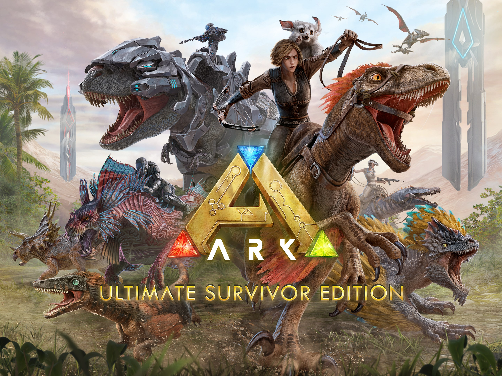
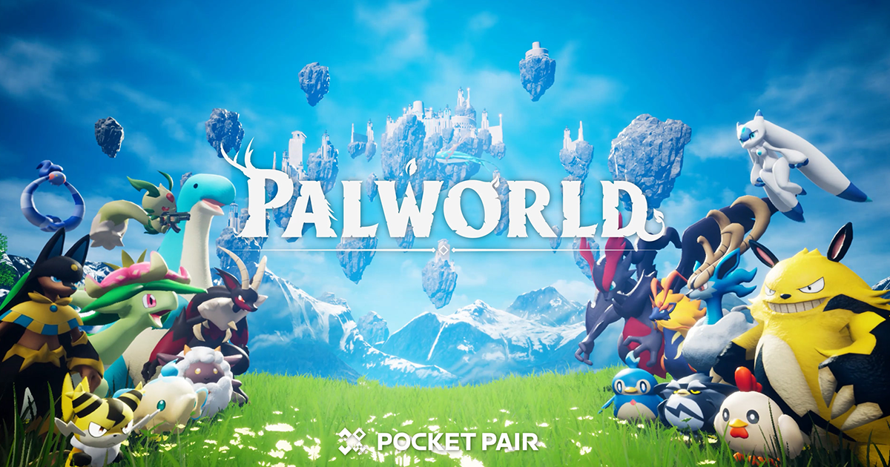
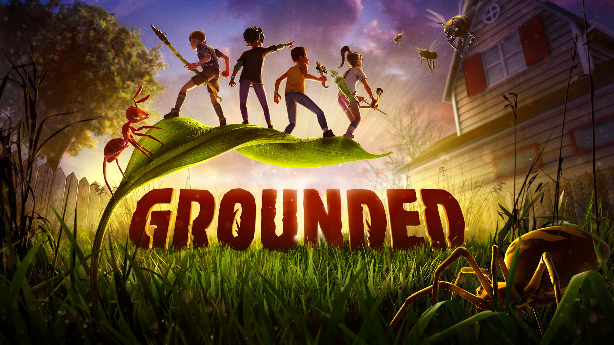
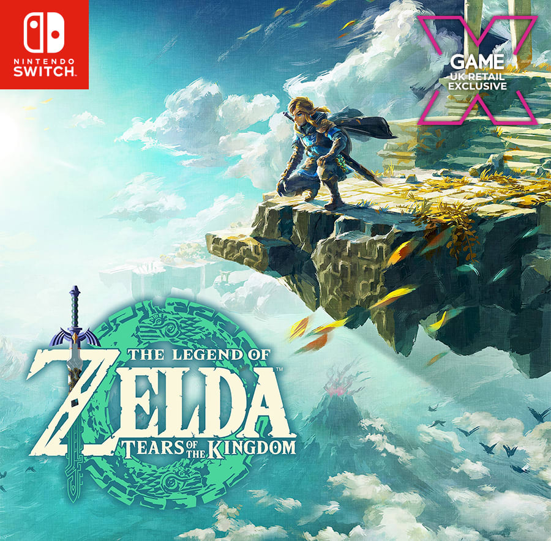

|  |
ArkThese ARKs' were launched prior to a global-level extinction event in which Element wiped out Earth's Human population. With the defeat of the King Titan and the activation of the signal, every single ARK descended to Earth, including the Aberrant ARK with Rockwell and a station full of corrupt Element. BUY LINK |
PalworldFirst Boss: Defeat Zoe and Grizzbolt to progress. World Exploration: Beyond the tutorial, explore the island and take on other bosses. No Main Story Yet: The main story of Palworld is still developing, with logs scattered throughout the map revealing more about the island and its inhabitants. BUY LINK |
 |

|
Son's of forestSons of the Forest is a game that takes place many years after the events of The Forest1. The story revolves around a team of private military contractors hired by PuffCorp to search for Edward Puffton, his wife Barbara, and his 20-year-old daughter Virginia, who have been missing for several months1. The game features a complex plot with references to the predecessor and three different endings2. It also includes a short optional story that can be followed through the discovery of hidden lore letters and completing objectives3. BUY LINK . |
|
GroundedGrounded is a science fiction game where you and your three friends have been shrunk down to the size of insects in the middle of an overgrown suburban backyard set in the 1990s1. The term "grounded" in this context means plausible or believable2. The game is about a group of teens who wake up to find themselves shrunken down to the size of a small insect and trapped in a backyard, but have no memory of how they were shrunk or how they ended up in the yard. BUY LINK |
 |

|
Super marioSuper Mario Odyssey is a 3D action-adventure platformer developed for the Nintendo Switch. In this game, players control Mario as he embarks on a quest to rescue Princess Peach from Bowser. The adventure takes place across various imaginative worlds called “Kingsdoms,” each offering unique environments and challenges. Mario’s new partner, Cappy, plays a crucial role—allowing Mario to take control of enemies and objects by throwing Cappy at them. The game features sandbox-like exploration, costumes that grant special abilities, and two-player co-op support. Overall, Super Mario Odyssey combines classic Mario gameplay with innovative mechanics, making it a delightful experience for fans of the series! 🌟🍄🎮 . BUY LINK |
|
zeldaThe Legend of Zelda is a captivating saga that spans generations of games. It revolves around the courageous young man, Link, who belongs to the elf-like Hylian race, and the magical princess, Zelda, who hails from the bloodline of the goddess Hylia. Together, they strive to save the enchanting land of Hyrule from the clutches of Ganon, an evil warlord turned demon king and the principal antagonist of the series1.The story begins with chaos engulfing a small kingdom in Hyrule. Ganon, the prince of darkness, leads an army that invades the kingdom and steals the Triforce of Power, one part of a mystical artifact that grants immense strength. Our hero, Link, embarks on a quest to retrieve the three pieces of the Triforce, a golden triangle with otherworldly powers. Along the way, he faces treacherous dungeons, ancient relics, and formidable foes, all while seeking to restore peace and protect Princess Zelda23. BUY LINK |
 |